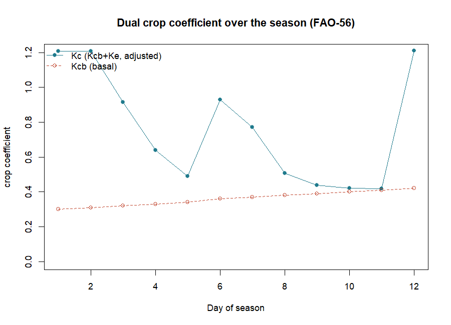
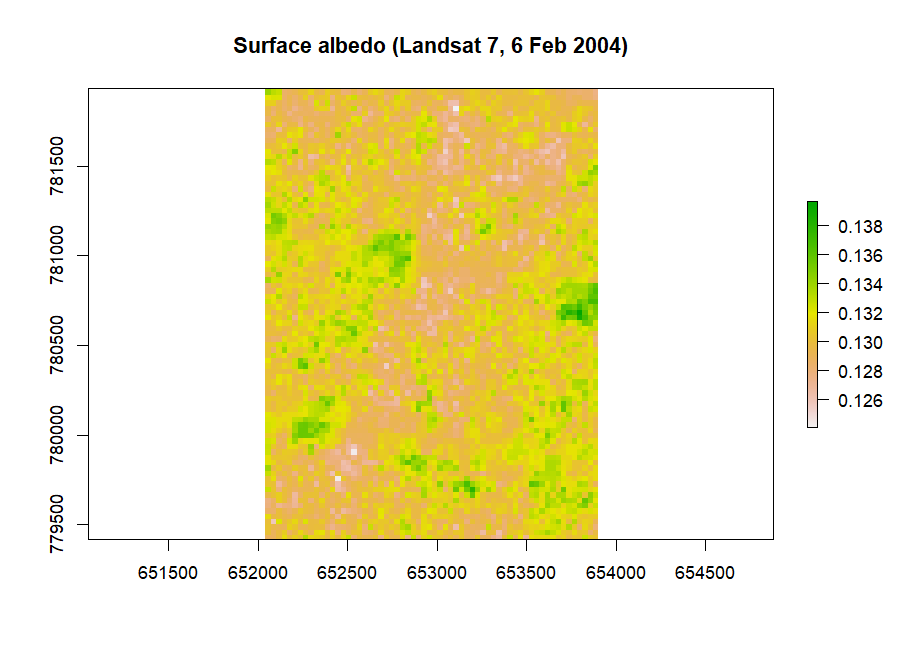
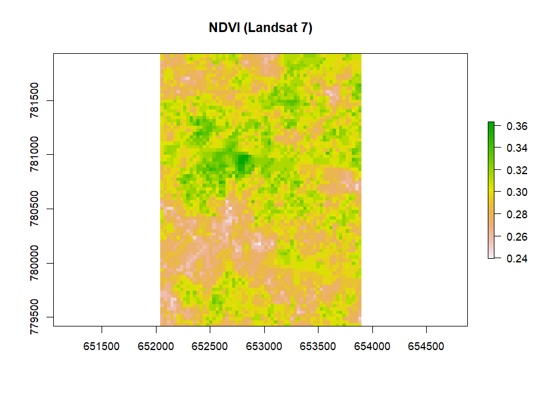
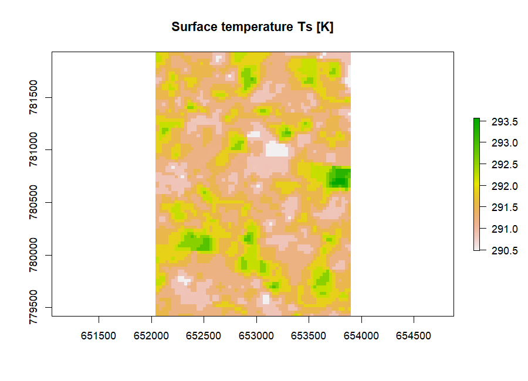
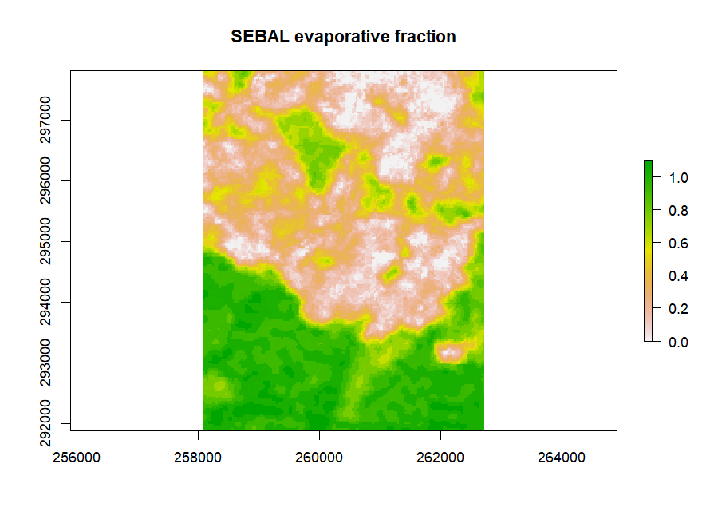
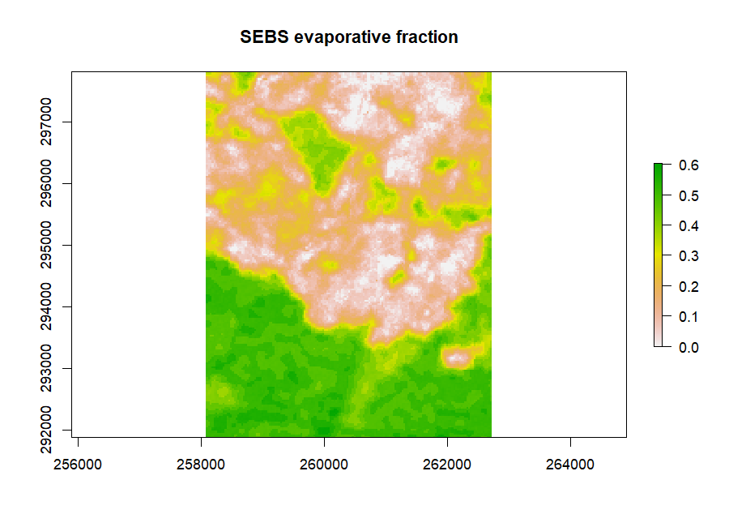
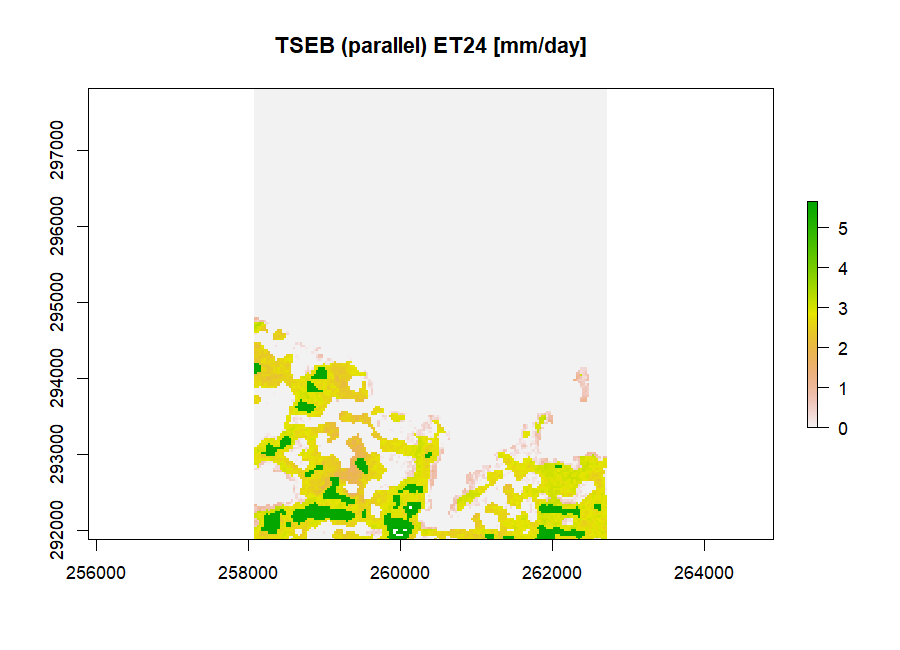

Evapotranspiration from Weather and Satellites
Source:vignettes/articles/sebkc_manual.Rmd
sebkc_manual.RmdA complete guide to surface energy balance and
crop-coefficient evapotranspiration in R with the sebkc
package
This manual teaches the sebkc R package from the ground
up. It assumes only basic R literacy and a first acquaintance with
evapotranspiration (ET), and explains every term as it appears.
Part 1 estimates ET from weather data — FAO-56
reference ET and the single/dual crop-coefficient water balance —
needing nothing but numbers. Part 2 estimates ET from
satellite imagery — the surface-energy-balance models (SEBAL,
METRIC, SEBS, SEBI, SSEB, S-SEBI and the two-source TSEB) — on the
bundled Landsat scene. Part 3 is a reference, a
reproducibility script, a glossary and exercises, and Part
4 a set of student projects.
New — a plain-language companion. If your goal is simply “how much water does my crop need and how much must I irrigate?”, start with the practical companion guide, “How Much Water Does My Crop Need?” (
crop_water_needs.html), which walks through real crop-water-needs assessments for farms near Kumasi with no jargon. This manual is the full technical reference behind it.
Dr George Owusu Department of Geography and Resource Development, University of Ghana
Version 1.0-7
Package: sebkc
Core is pure R; spatial input uses 'raster' and 'sp'
For: hydrologists, agronomists, irrigation engineers, remote-sensing scientists
and anyone estimating evapotranspiration from weather or satellite data
Prerequisites: basic R literacy
License: GPL-2Every number and figure in this manual was produced by running the package. The script that regenerates them,
reproduce_manual.R, ships in this folder; its console output isrepro_output.txtand its figures are infigures/. Run it and you get exactly the tables and plots printed here. (The numbers were produced on R 4.6.0 withsebkc1.0-7.)
Contents
Part 1 — ET from weather data (point) 1. What this
package does 2. Installing and loading 3. Two ways in: point vs
satellite 4. ETo: 24-hour reference ET (FAO-56) 5.
ETohr: hourly reference ET 6. weather:
retrieving weather data 7. kc: single and dual crop
coefficients, and the water balance 8. cal.kc: calibrating
the water balance 9. biomass: crop yield from temperature
and radiation
Part 2 — ET from satellite imagery (spatial) 10.
From image to ET: the surface energy balance 11. sebkcstack
and landsat578: from raw bands to albedo, NDVI and Ts 12.
coldTs / hotTs: the anchor pixels 13.
sebal: SEBAL and METRIC 14. The one-source family:
sebs, sebi, sseb,
ssebi 15. tseb: the two-source model 16.
Comparing the models 17. wdi: the water deficit index 18.
Coupling evaporative fraction to the FAO-56 water balance
Part 3 — reference 19. Function and argument reference 20. The bundled data 21. Reproducing the figures 22. Glossary 23. Exercises
Part 4 — projects 24. The project brief template 25. Agriculture and irrigation projects 26. Hydrology and water-resources projects 27. Remote-sensing and land-surface projects 28. Climate and environment projects 29. Methods project
How to cite this manual References
PART 1 — ET from weather data (point)
1. What this package does
Evapotranspiration (ET) — the water that leaves the
land as evaporation from soil and transpiration from plants — is the
largest consumer of irrigation water and a central term in every water
balance. sebkc estimates it two complementary ways, and
integrates the two:
-
From weather data (Part 1). The FAO-56 method
computes a reference ET (
ETo) for a standard grass surface, then scales it by a crop coefficient (kc) to a specific crop, inside a day-by-day soil-water balance that tracks soil moisture, irrigation need and crop stress. Nothing but weather numbers is required. -
From satellite imagery (Part 2). The
surface energy balance partitions the net radiation a
pixel absorbs into heating the air, heating the soil, and evaporating
water; the last term is ET.
sebkcimplements the major one-source models (SEBAL, METRIC, SEBS, SEBI, SSEB, S-SEBI) and the two-source TSEB, turning a Landsat scene into a map of ET. -
The integration. The satellite evaporative
fraction can be fed straight into the FAO-56 water balance
(
kc), so a map of remotely sensed ET becomes a spatial irrigation-scheduling model. That coupling is the package’s distinctive contribution.
The problem this manual follows — irrigation water in Kumasi. The bundled data are a Landsat scene over Kumasi, Ghana, plus a short irrigation record. We ask: how much water does the reference crop demand (Part 1), how much is the land actually evapotranspiring pixel by pixel (Part 2), and how do the two combine into an irrigation schedule (Section 18)? Every function is demonstrated on that thread.
Key terms, defined once
-
Reference ET (
ETo) — ET of a standard, well-watered grass; the climatic demand, in mm/day. -
Crop coefficient (
Kc) — the ratio of a crop’s ET to reference ET;ETc = Kc · ETo. -
Net radiation (
Rn) — energy absorbed by the surface [W/m²]. -
Sensible heat (
H) — energy heating the air; soil heat (G) — energy heating the ground; latent heat (LE) — energy evaporating water. The surface energy balance isRn = G + H + LE. -
Evaporative fraction (
EF) — the share of available energy going to ET,EF = LE / (Rn − G); the bridge between the satellite models and daily ET.
2. Installing and loading
From CRAN (recommended — dependencies are handled automatically):
install.packages("sebkc")
library(sebkc)Or the development version from GitHub:
# install.packages("remotes")
remotes::install_github("gowusu/sebkc")The spatial workflow (Part 2) uses raster and
sp, which install with the package. System
note. Verified on R 4.6.0 (Windows) with raster
3.6-32 and sp 2.2-3.
3. Two ways in: point vs satellite
sebkc has two families of functions that meet in the
middle:
Table 1: The two ET pathways in sebkc and where they
meet.
| Pathway | Input | Functions | Output |
|---|---|---|---|
| Point (Part 1) | weather numbers |
ETo, ETohr, weather,
kc, cal.kc, biomass
|
reference/crop ET, water balance, yield |
| Satellite (Part 2) | Landsat / MODIS rasters |
landsat578, coldTs/hotTs,
sebal, sebs, sebi,
sseb, ssebi, tseb,
wdi
|
maps of Rn, H, G, LE, EF, ET |
| The bridge | satellite EF → FAO-56 | kc(kc = EF, ...) |
spatial water balance / irrigation need |
Part 1 needs no imagery and runs instantly; start there.
4. ETo: 24-hour reference ET (FAO-56)
ETo() computes the daily reference evapotranspiration by
the FAO-56 Penman–Monteith equation. With a full set of weather it
reproduces the FAO textbook; with only Tmax and Tmin it falls back to
the Hargreaves radiation estimate, so it always returns a number.
# minimal data (a warm, humid tropical day)
PET <- ETo(Tmax = 31, Tmin = 28, latitude = 5.6, DOY = "6-2-2001")
PET$ETo
#> 2.373 # mm/day
# full data — FAO-56 Example 18, Brussels, 6 July
PET24 <- ETo(Tmax = 21.5, Tmin = 12.3, z = 10, uz = 2.78, altitude = 100,
RHmax = 84, RHmin = 63, n = 9.25, DOY = 187, latitude = 50.8)
PET24$ETo
#> 3.88 # mm/day — the FAO textbook value is 3.9The full call reproduces ETo = 3.88 mm/day against
the textbook’s 3.9, and returns the intermediate quantities too: net
radiation Rn = 13.28 MJ/m²/day, the slope of the
saturation-vapour-pressure curve = 0.1221 kPa/°C, the psychrometric
constant y = 0.0666 kPa/°C, and the vapour-pressure deficit
vpd = 0.589 kPa.
The FAO-56 Penman–Monteith equation (Allen et al., 1998, Eq. 6). Reference ET combines an energy term (net radiation) and an aerodynamic term (wind × vapour deficit):
where is the slope of the saturation-vapour-pressure curve (
slope), the psychrometric constant (y), the 2-m wind speed, and the vapour-pressure deficit (vpd). When wind, humidity or sunshine are missing,sebkcestimates from temperature via the Hargreaves coefficientKrs(0.16 interior, 0.19 coastal).
Two arguments matter for later coupling: EF= accepts a
satellite evaporative fraction and returns actual ET
(ETa); Kc= accepts a crop coefficient and
returns crop ET (ETc).
surface= switches the reference between
"grass" (default) and "alfalfa".
5. ETohr: hourly reference ET
For sub-daily work — matching a satellite overpass, say —
ETohr() computes ET for a period of t1 hours
centred on time, using mean temperature and humidity:
ET1 <- ETohr(Tmean = 38, RH = 52, DOY = 274, Lz = 15, t1 = 1, time = 14.5,
Lm = 16.25, latitude = 16.22, uz = 3.3, Rs = 2.450)
ET1$ETo
#> 0.656 # mm/hourLz and Lm are the longitudes of the
time-zone centre and the site (both degrees west, positive), needed for
the solar-time correction. The instantaneous ET at an overpass is what
upscales, via the evaporative fraction, to a daily map in Part 2.
6. weather: retrieving weather data
weather() builds the ETo/kc
inputs for a site from the NASA POWER daily data
service (an internet connection is required). Give it a
longitude/latitude and a date range; it returns temperature, humidity,
wind, solar radiation and precipitation, already named and unit-ready
for FAO-56:
kumasi <- weather(longitude = -1.5, latitude = 6.7,
NASA.SSE = list(from = "2001-04-01", to = "2001-04-07"))
d <- kumasi$NASA.SEE$data
d[, c("date","Tmax","Tmin","RH","uz","Rs","P")]
#> date Tmax Tmin RH uz Rs P
#> 1 2001-04-01 34.01 23.84 74.99 2.50 22.41 6.73
#> 2 2001-04-02 33.33 23.39 77.89 2.91 22.63 5.28
#> 3 2001-04-03 30.30 23.47 81.28 3.01 10.49 4.27
#> ... (7 days)The columns carry FAO-56 names and units:
Tmax/Tmin/Tmean (°C),
RH (%), uz (2-m wind, m/s), Rs
(solar radiation, MJ/m²/day), P (mm/day)
and altitude (m, from the POWER header), plus a calendar
date and a numeric DOY. They feed
ETo directly — row 1 above gives ETo = 5.32
mm/day. (An older station path, by WMO/airport code, is retained but its
Weather Underground source was discontinued; use the coordinate/POWER
path above.)
From download to ET. Because the columns are already
FAO-56-ready, generating reference ET for every day is one
sapply over the rows — and the precipitation P
that POWER returns drives the water balance too:
d$ETo <- sapply(seq_len(nrow(d)), function(i)
ETo(Tmax = d$Tmax[i], Tmin = d$Tmin[i], RHmax = d$RH[i], RHmin = d$RH[i],
uz = d$uz[i], Rs = d$Rs[i], altitude = d$altitude[i],
latitude = 6.7, DOY = d$date[i])$ETo)
round(d[, c("date","Tmax","Tmin","Rs","P","ETo")], 2)
#> date Tmax Tmin Rs P ETo
#> 1 2001-04-01 34.01 23.84 22.41 6.73 5.32
#> 2 2001-04-02 33.33 23.39 22.63 5.28 5.21
#> 3 2001-04-03 30.30 23.47 10.49 4.27 3.04 # cloudy day: low Rs -> low ETo
#> ... # 10 days: mean ETo 4.59, total rain 30.3 mm
# feed the same POWER ETo and precipitation into the FAO-56 water balance
m <- kc(ETo = d$ETo, P = d$P, RHmin = 55, soil = "sandy loam", crop = "Broccoli", I = 0)
round(m$output[, c("Day","ETo","ETc","P","Drend")], 2)
#> Day ETo ETc P Drend
#> 1 1 5.32 4.70 6.73 0.67
#> ...
#> 10 10 4.50 1.74 1.03 8.32 # ~8 mm cumulative irrigation need after 10 rain-fed daysA few lines take you from a coordinate to a daily ET series and an
irrigation-need estimate (Drend), entirely from real,
downloaded weather — precipitation included.
Getting the data manually — no R needed. The same series is available from the web: - NASA POWER Data Access Viewer (point-and-click download): https://power.larc.nasa.gov/data-access-viewer/ - POWER API documentation (the endpoint
weather()calls): https://power.larc.nasa.gov/docs/services/api/temporal/daily/ - POWER home: https://power.larc.nasa.govOther free weather/solar sources you can feed to
ETo/kc: - Open-Meteo — historical + forecast API, no key: https://open-meteo.com - Copernicus ERA5 (CDS): https://cds.climate.copernicus.eu - NOAA Climate Data Online (GHCN stations): https://www.ncei.noaa.gov/cdo-web/ - a local met agency (e.g. the Ghana Meteorological Agency) for station records.POWER covers ~1981 to near-present at ~0.5° resolution; for field-scale work a nearby ground station is preferable where available. This section needs a live connection and is not part of the offline reproduction.
7. kc: single and dual crop coefficients, and the water
balance
kc() is the heart of Part 1. It turns reference ET into
crop ET and runs a day-by-day FAO-56 soil-water balance
— tracking depletion, irrigation need, runoff, deep percolation and crop
stress. It has a backend of the FAO-56 tables, so naming a crop and soil
is often enough.
The single vs dual coefficient. A single Kc
lumps evaporation and transpiration into one curve; the dual Kc
splits them into a basal transpiration coefficient Kcb and
a soil-evaporation coefficient Ke, which is more accurate
when the surface wets and dries between irrigations.
Crop ET and the dual coefficient (FAO-56). Crop ET scales reference ET by the crop coefficient, and the dual form splits that coefficient in two:
where is the basal (transpiration) coefficient, the soil-evaporation coefficient, and a water-stress coefficient that drops below 1 when root-zone depletion exceeds the readily available water.
Reproducing the FAO-56 textbook. The package matches the worked examples:
# Example 32 — Broccoli, dual Kc, sprinkler irrigation
Ex32 <- kc(ETo = 7, P = 0, RHmin = 20, soil = "sandy loam", crop = "Broccoli",
I = 10, kctype = "dual", u2 = 3, kc = c(0.9, 0, 0), h = 1, Zr = 0.1)
Ex32$output$fc #> 0.526 fraction of ground covered
Ex32$output$Kc_adj #> 1.301 adjusted crop coefficientSwitching the wetting method reproduces Examples 33 (furrow,
fw = 0.3) and 34 (drip, fw = "drip"), giving
Kc_adj = 0.66 and 0.651 respectively — lower, because
wetting less of the surface leaves less to evaporate.
A multi-day water balance. The bundled
irrigation.txt holds a 12-day record. Feeding its ETo,
precipitation and irrigation columns runs the balance:
d <- read.table(system.file("extdata","sys","irrigation.txt", package = "sebkc"),
header = TRUE)
m <- kc(ETo = d$ETo, P = d$P, RHmin = 35, soil = "sandy loam",
crop = "Broccoli", I = d$I)
m$output[c("Day","ETo","Kc","ETc","TAW","RAW","AW_modelled","Runoff")]Table 2: The FAO-56 water balance over 12 days (single-Kc, bundled irrigation data).
| Day | ETo | Kc | ETc | TAW | RAW | AW_modelled | Runoff |
|---|---|---|---|---|---|---|---|
| 1 | 4.5 | 0.15 | 5.46 | 5 | 2.25 | 5.00 | 0 |
| 2 | 5.0 | 0.15 | 6.07 | 10 | 4.31 | 10.00 | 0 |
| 3 | 3.9 | 0.15 | 3.55 | 15 | 6.11 | 8.93 | 0 |
| 6 | 2.7 | 0.15 | 2.43 | 30 | 17.56 | 22.49 | 0 |
| 9 | 4.7 | 0.15 | 1.01 | 45 | 26.37 | 29.58 | 0 |
| 12 | 6.4 | 0.15 | 7.79 | 60 | 35.44 | 60.00 | 0 |
TAW is the total available water the
root zone can hold, RAW the readily
available part before stress begins, and
AW_modelled the modelled soil water on the day. The
output data frame carries ~40 columns in all —
Ks, Kcb, Ke, Drend
(the irrigation depth needed to refill the root zone), DP
(deep percolation), CN (curve number) and more (Section
19). Running the dual model over the same days, with the
bundled Kcb column and stage lengths, gives the classic
season curve (Figure 1): the adjusted Kc (transpiration +
evaporation spikes after wetting) rides above the smooth basal
Kcb.

8. cal.kc: calibrating the water balance
Many of the balance’s parameters — field capacity FC,
wilting point WP, curve number CNII, rooting
depth Zr, the depletion fraction p, readily
evaporable water REW — are rarely known exactly.
cal.kc() calibrates them against measured soil-moisture
observations by searching for the values that best reproduce the record.
Supply the same call as kc() plus a column of measured soil
water, and it returns the fitted parameters and goodness-of-fit. Use it
whenever you have field measurements to anchor the model before trusting
its irrigation recommendations. (Like weather,
cal.kc needs user-supplied field data, so it is described
here but not part of the offline reproduction — the only two functions
in that category.)
9. biomass: crop yield from temperature and
radiation
biomass() estimates crop biomass and yield from average
temperature, shortwave radiation and the growing-season dates, using the
FAO agro-ecological-zone method and a harvest index:
bm <- biomass(Tday = 26.9, T24 = 25.3, Rs = 452, latitude = 11.18, HI = 0.4,
plantdate = "2015-05-1", harvestdate = "2015-08-29",
adaptability = 3, LAI = 5, crop = "maize")
bm$yield
#> 9.822809 # t/ha, maize, 120-day seasonPassing vectors of
latitude/Rs/Tday estimates
several locations at once. Yield closes the loop from water (ET) to
production — the quantity irrigation ultimately serves.
PART 2 — ET from satellite imagery (spatial)
Reading Part 2. Part 2 estimates actual ET pixel by pixel from a satellite image, where Part 1 estimated the crop’s demand from weather. The two meet in Section 18. The five terms you need: Rn (net radiation absorbed), G (soil heat), H (sensible heat warming the air), LE (latent heat = ET), and EF (evaporative fraction, the share of energy going to ET). Everything below is a different way of solving one equation for LE.
10. From image to ET: the surface energy balance
A satellite cannot see ET directly. What it sees — reflected sunlight
(albedo), vegetation greenness (NDVI) and thermal emission (surface
temperature Ts) — lets us solve the surface energy
balance, and ET is the closing term:
The surface energy balance. All the energy a surface absorbs must go somewhere — into the ground, the air, or evaporating water:
(net radiation) is fixed by albedo and temperature; (soil heat flux) is a modelled fraction of ; (sensible heat) is the hard term, driven by the surface-to-air temperature difference. Latent heat — the energy consumed by ET — is whatever is left: . Instantaneous ET follows as ( = latent heat of vaporisation), and the daily total from the evaporative fraction , assumed constant through the day: .
The models of Part 2 differ almost entirely in how they estimate H (and, for the simplified models, how they shortcut straight to EF). The workflow is always the same three steps: (1) preprocess the image to albedo/NDVI/Ts (Section 11); (2) pick the calibration anchor pixels (Section 12); (3) run a model (Sections 13–15).
11. sebkcstack and landsat578: from raw
bands to albedo, NDVI and Ts
Raw Landsat bands are digital numbers, not physical quantities.
sebkcstack() stacks a scene folder (and can de-stripe
Landsat-7 SLC-off gaps), and landsat578() performs the
radiometric correction — converting bands to radiance, reflectance,
albedo, NDVI, SAVI,
fractional cover and surface temperature — for Landsat
5, 7 or 8:
l7 <- brick(system.file("extdata","landsat7_6feb2004.grd", package = "sebkc"))
L <- landsat578(data = l7, welev = 317.1, sensor = 7, gain = "high",
sunelev = 50.71154048, K1 = 666.09, K2 = 1282.71, date = "2002-2-6")On the bundled Landsat-7 subset this returns (Figures 2–4):
Table 3: Radiometric products from landsat578 on the
bundled Landsat-7 scene.
| Product | min | mean | max |
|---|---|---|---|
| albedo | 0.124 | 0.130 | 0.140 |
| NDVI | 0.240 | 0.296 | 0.363 |
| SAVI | 0.112 | 0.141 | 0.181 |
| Ts [K] | 290.5 | 291.5 | 293.6 |
Point data= at a scene folder instead and
landsat578 reads the metadata and finds the Landsat-8
rescaling factors automatically. The returned object plugs straight into
every model below.



12. coldTs / hotTs: the anchor pixels
SEBAL and METRIC calibrate the sensible-heat term against two
anchor pixels — a cold/wet pixel
(well-watered vegetation, where nearly all energy goes to ET, so
H ≈ 0) and a hot/dry pixel (bare, dry
soil, where LE ≈ 0, so H ≈ Rn−G). The
near-linear relationship between surface temperature and H
is fixed by these two ends. coldTs() and
hotTs() find them automatically by k-means clustering on
temperature, NDVI and albedo.
A note on the two bundled scenes. Part 2’s energy-balance demonstrations (Sections 12–17) run on the pre-processed rasters
albedo.grd,Ts.grd,NDVI.grdandLAI.grd— a warmer Kumasi scene withTs304–313 K, supplied ready-made so the models can be shown without repeating Section 11’s preprocessing (which used a separate, cooler Landsat-7 date,Ts≈ 291 K). That is why the temperatures jump between the two sections. Load the model inputs once:albedo <- raster(system.file("extdata","albedo.grd", package = "sebkc")) Ts <- raster(system.file("extdata","Ts.grd", package = "sebkc")) NDVI <- raster(system.file("extdata","NDVI.grd", package = "sebkc")) LAI <- raster(system.file("extdata","LAI.grd", package = "sebkc"))
cold <- coldTs(Ts = Ts, NDVI = NDVI, albedo = albedo, sunangle = 50,
cluster = 7, extent = "full", seed = 1)
cold$Tscold #> 304.89 K (x = 259447, y = 292882)
hot <- hotTs(Ts = Ts, NDVI = NDVI, albedo = albedo, cluster = 7,
extent = "full", seed = 1)
hot$Tshot #> 311.98 K (x = 260737, y = 294412)On the bundled Kumasi scene (Ts 304–313 K) the cold pixel sits at
304.89 K and the hot pixel at 311.98 K
— a 7 K spread that anchors the H model. extent= controls
the search: "full" uses the whole image,
"auto" the middle portion, and "interactive"
lets you digitise a polygon on the temperature map. Pass
seed= for reproducible pixel selection (k-means is
otherwise random). The energy-balance functions accept
xyhot="auto"/xycold="auto" to run this for
you.
13. sebal: SEBAL and METRIC
sebal() computes the full Bastiaanssen (1998)
SEBAL energy balance — and, with
model="METRIC", the Allen et al. (2007)
METRIC variant that anchors the hot/ cold pixels to a
reference ET instead of to bare extremes. It returns the whole balance
as rasters:
m <- sebal(albedo = albedo, Ts = Ts, NDVI = NDVI, LAI = LAI,
iter.max = 7, xyhot = "full", xycold = "full",
DOY = 37, sunelev = 50.71154048, welev = 317.1, model = "SEBAL")Table 4: SEBAL energy-balance components on the bundled Kumasi scene [W/m²].
| Component | min | mean | max |
|---|---|---|---|
Rn net radiation |
371 | 419 | 455 |
G soil heat flux |
55 | 69 | 206 |
H sensible heat |
−29 | 179 | 401 |
LE latent heat (ET) |
−125 | 171 | 415 |
EF evaporative fraction |
0.00 | 0.523 | 1.10 |
How SEBAL solves for H (the hard step). Sensible heat is , where is the near-surface air-temperature difference and the aerodynamic resistance. Neither is known a priori, so SEBAL assumes is linear in surface temperature, fixes from the two anchor pixels ( at the cold pixel, at the hot pixel), and iterates: compute , update the atmospheric stability (Monin–Obukhov length) and , recompute , until it converges (
iter.max, default 7). Then and .
The mean EF of 0.52 says about half the available
energy over the scene goes to ET; the map (Figure 5) shows the vegetated
south (green, EF near 1) evaporating freely while the built-up centre of
Kumasi (pink, EF near 0) does not — the urban heat-and-dryness
signature, mapped. Supply Rn24= (a 24-hour net radiation,
easily had from ETo) to convert EF into a daily ET map
(ET24).
A handful of edge pixels report EF slightly above 1 (max 1.10) or a
small negative LE (min −125 W/m²). These are not physical —
they are artifacts of extrapolating the anchor-pixel calibration to the
scene margins. Mask or clip the borders before using the product, and
treat EF as bounded to [0, 1].
Running METRIC. METRIC is SEBAL’s operational
cousin: instead of anchoring the hot/cold pixels to bare/wet extremes,
it ties them to a reference ET (from a weather
station), and it corrects surface temperature for terrain with a
DEM and lapse rate. Switch it on with
model="METRIC" and supply those extras:
metric <- sebal(albedo = albedo, Ts = Ts, NDVI = NDVI, LAI = LAI, DEM = dem,
lapse = 0.0065, ETr = 0.35, ETr24 = 6, model = "METRIC",
xyhot = "full", xycold = "full", DOY = 37, sunelev = 50.71,
welev = 317.1)where ETr is the alfalfa reference ET at overpass
[mm/hr] and ETr24 its daily total. The bundled
landsat8/DEM.tif supplies a DEM for a matching scene.
(METRIC is not run in the offline reproduction because it needs
a DEM co-registered to the input rasters and a reference-ET series; it
is otherwise identical in output to SEBAL — Rn,
G, H, LE, EF, plus
an ETrF reference-ET fraction and ETins.)

14. The one-source family: sebs, sebi,
sseb, ssebi
Four further one-source models trade SEBAL’s full iteration for different simplifications. All run on the same albedo/Ts/NDVI inputs and return an evaporative fraction; they differ in how they get there.
-
sebs— Su (2002) Surface Energy Balance System: a physically complete scheme that bounds EF between a theoretical dry limit and wet limit. Here mean EF = 0.275 (Figure 6). -
sebi— Menenti & Choudhury (1993) Surface Energy Balance Index: uses the spread between a maximum and minimum surface temperature. Mean EF = 0.403. -
sseb— Senay et al. (2011) Simplified SEB: the most economical model, scaling ET linearly between the average hot and cold pixel temperatures,ETf = (TH − Ts)/(TH − TC), and multiplying by reference ET. Mean EF = 0.466, and because it usesETointernally it returns a daily ET24 directly (mean 1.31 mm/day). -
ssebi— Roerink et al. (2000) S-SEBI: needs no weather at all — it reads the wet and dry edges straight off the albedo–temperature scatter of the image. Mean EF = 0.584.
sebs (albedo, Ts, Tmax = 31, Tmin = 28, RHmax = 84, RHmin = 63, NDVI, LAI,
xyhot = "full", xycold = "full", DOY = 37, sunelev = 50.71, welev = 317.1)
ssebi(Ts = Ts, albedo = albedo, threshold = 0) # weather-free
The SSEB shortcut (Senay et al., 2011). The simplest useful model skips the energy balance entirely and interpolates temperature between the anchors:
where and are the average hot and cold pixel temperatures. A pixel as cool as the cold anchor gets ; as hot as the hot anchor, .
15. tseb: the two-source model
Where the one-source models treat each pixel as a single surface,
tseb() (Norman et al., 1995; Colaizzi et al., 2012) splits
it into canopy and soil, solving the
energy balance separately for each and so partitioning ET into
transpiration (T) and evaporation (E) — valuable for
partial-cover crops. It offers a parallel network
(canopy and soil resistances side by side) and a series
network (coupled through a shared air temperature):
tp <- tseb(Ts, LAI, albedo = albedo, NDVI = NDVI, DOY = 37, xyhot = "full",
xycold = "full", Tmax = 31, Tmin = 28, hc = 20, sunelev = 50,
welev = 345, latitude = 5.6, n = 6.5, network = "parallel")
tp$ET24 # E24 (evaporation) + T24 (transpiration) also returnedOn the bundled scene the parallel network gives mean
ET24 = 0.54 mm/day (Figure 7) and the series network
2.27 mm/day — the two formulations differ most where cover is sparse,
which is precisely the case that motivates a two-source model.
series="xPT" uses the Priestley–Taylor closure,
series="PM" the Penman–Monteith one.

16. Comparing the models
Run on the same scene, the models give a spread of mean evaporative fractions — a reminder that model choice is itself a source of uncertainty:
Table 5: Mean evaporative fraction from each one-source model on the bundled Kumasi scene.
| Model | Mean EF | Character |
|---|---|---|
| SEBS | 0.275 | physically bounded, conservative here |
| SEBI | 0.403 | temperature-range index |
| SSEB | 0.466 | simplest; returns ET24 directly |
| SEBAL | 0.523 | full iterative balance (reference) |
| S-SEBI | 0.584 | weather-free, image-internal edges |
The models agree on the pattern — every one maps the vegetated south as wet and the city as dry — but differ on the level by nearly a factor of two. For an operational estimate, calibrate against a flux tower or a water balance if you can, and report which model you used. SSEB and S-SEBI are attractive when weather data are scarce; SEBAL/METRIC are the reference when anchor pixels and weather are good.
17. wdi: the water deficit index
wdi() computes the Moran et al. (1994) Water
Deficit Index from surface–air temperature and vegetation,
scaled between a wet edge and a dry edge:
w <- wdi(Ts = Ts, Ta = 299, NDVI = NDVI, Tsmax = 313, Tsmin = 304)
w$EF # min 0.049 mean 0.488 max 1.000WDI = 0 is fully watered, WDI = 1 fully stressed; the returned
EF is its complement (mean 0.49 here). Supply explicit
hot/cold surface temperatures (Tsmax/Tsmin) as
above, or pass hotTs/coldTs objects; the
"auto" edges invoke the interactive anchor routine (Section
12).
18. Coupling evaporative fraction to the FAO-56 water balance
The package’s distinctive step: feed a satellite evaporative
fraction into the FAO-56 water balance (kc)
instead of tabulated crop coefficients, turning a map of ET into a
spatial irrigation-scheduling model. Supply the EF (from any Part-2
model) as the kc= argument and set kctype to
the model:
ef <- sebi(folder = scene, welev = 317, Tmax = 31, Tmin = 28)$EF
kc2 <- stack(ef/2, ef, ef/3) # EF at initial/mid/end stages
spatial <- kc(ETo = d$ETo, P = d$P, RHmin = 35, soil = "sandy loam",
crop = "Broccoli", I = d$I, kc = kc2, Rn = 8, lengths = c(4,4,2,2))
spplot(spatial$Drend) # map of irrigation depth neededNow every pixel carries its own water balance: Drend
maps the irrigation depth needed to refill the root zone,
Ineedxy the critically needed amount, and
ETcxy the crop ET through time. Passing
xydata= (longitudes/latitudes of monitoring points) with
per-step precipitation interpolates sparse gauge data across the scene
first. This is where Parts 1 and 2 become one model: remotely sensed
actual ET driving a field-scale irrigation
schedule.
PART 3 — Reference
19. Function and argument reference
Table 6: The principal sebkc functions.
| Function | Purpose | Key inputs |
|---|---|---|
ETo |
24-h reference ET (FAO-56) | Tmax, Tmin, DOY, latitude (+RH, wind, sun) |
ETohr |
hourly reference ET | Tmean, RH, time, Lz, Lm, latitude |
weather |
fetch WMO/NASA weather | wmo/airport or lon/lat + dates |
kc |
crop coefficient + water balance | ETo, P, I, soil, crop (+ kc, lengths, FC, WP…) |
cal.kc |
calibrate the balance | as kc + measured soil water |
biomass |
crop yield | Tday, T24, Rs, latitude, plant/harvest dates |
sebkcstack |
stack/de-stripe a scene | folder |
landsat578 |
bands → albedo/NDVI/Ts | data (brick or folder), welev, sensor |
coldTs/hotTs
|
anchor pixels | Ts, NDVI, albedo, extent, seed |
sebal |
SEBAL / METRIC | albedo, Ts, NDVI, LAI, welev, DOY, sunelev, model |
sebs/sebi
|
SEBS / SEBI EF | albedo, Ts, NDVI, Tmax, Tmin, … |
sseb/ssebi
|
SSEB / S-SEBI | Ts, albedo (+ NDVI, weather for SSEB) |
tseb |
two-source E/T/ET | Ts, LAI, albedo, NDVI, network |
wdi |
water deficit index | Ts, Ta, NDVI, Tsmax, Tsmin |
Recurring arguments: welev
weather-station elevation (m); DOY day of
year (or a YYYY-mm-dd date);
sunelev sun elevation from the image
metadata; xyhot/xycold anchor
pixels ("auto", "full", coordinates, or a
hotTs/coldTs object);
Rn24 24-h net radiation for daily ET;
folder a Landsat scene directory (bypasses
manual preprocessing); iter.max
sensible-heat iterations. The kc return frame’s main
columns are Kc, Kcb, Ke,
Ks, ETc, TAW, RAW,
Drend (irrigation need), DP (deep
percolation), Runoff, CN.
20. The bundled data
Everything in this manual runs on
system.file("extdata", ..., package="sebkc"):
-
albedo.grd,Ts.grd,NDVI.grd,LAI.grd— a preprocessed Kumasi scene (Ts 304–313 K), the inputs for the energy-balance demonstrations. -
landsat7_6feb2004.grd— a raw Landsat-7 band stack forlandsat578. -
stack/,slc/— Landsat scene folders for the automatic (folder=) and SLC-off de-striping workflows. -
landsat8/— full Landsat-8 scenes with a DEM, for METRIC. -
sys/irrigation.txt— the 12-day irrigation record used in Section 7. -
kc/kumasi*.rds— Kumasi crop-coefficient time series (1960–2015 and RCP 2.6/4.5/8.5 climate scenarios to 2050) for time-series and climate-change work.
21. Reproducing the figures
Every number and figure here comes from
reproduce_manual.R:
source("reproduce_manual.R") # writes repro_output.txt and figures/*.pngIt runs reference ET, the FAO-56 kc examples and water balance,
Landsat preprocessing, the anchor-pixel selection, all six
energy-balance models, biomass and WDI, logging each figure
ok/FAIL.
22. Glossary
- Reference ET (ETo) — ET of standard well-watered grass [mm/day].
- Crop coefficient (Kc) — ETc/ETo; dual = Kcb (basal) + Ke (soil evaporation).
- Water-stress coefficient (Ks) — reduces Kc when the root zone is depleted.
- TAW / RAW — total / readily available soil water in the root zone [mm].
-
Net radiation (Rn), soil heat (G), sensible heat (H), latent
heat (LE) — the energy-balance terms [W/m²];
Rn = G + H + LE. - Evaporative fraction (EF) — LE/(Rn−G); the share of energy going to ET.
- Albedo / NDVI / Ts — surface reflectance / greenness / temperature from imagery.
- Anchor (hot/cold) pixels — dry and wet reference pixels that calibrate H.
- SEBAL, METRIC, SEBS, SEBI, SSEB, S-SEBI, TSEB — surface-energy-balance models.
23. Exercises
-
Reference ET. Compute
ETofor a day with Tmax = 34, Tmin = 24, latitude 6, DOY 100, using only temperature. Then add RHmax/RHmin and sunshine and compare — how much does the estimate move? -
Crop coefficient. Reproduce FAO-56 Example 32, then
change
fwfrom sprinkler to"drip"; why doesKc_adjfall? -
Water balance. Run the 12-day
irrigation.txtbalance; on which day does the modelled available water first exceedRAW, and what does that imply for irrigation timing? -
Anchor pixels. Run
hotTs/coldTson the bundled scene withseed=1and again withseed=2; how much doTshot/Tscoldmove, and what does that do to SEBAL’s EF? -
Model comparison. Run
sebal,sebsandssebion the bundled rasters and map the three EFs side by side. Where do they agree, and where most disagree?
PART 4 — Projects
This part turns the manual into coursework. Each project reruns the same method you learned in Parts 1–2 on a new scene, catchment or crop, so a student can go from raw imagery and weather to a mapped, publishable ET result by following the section references back to the worked Kumasi example. The projects suit MPhil and PhD students in geography, agronomy, irrigation engineering, hydrology and remote sensing. Assign one per student.
24. The project brief template
Every project below follows this eight-part structure. Read it once; each project then fills in its specifics.
- Research question — the one- or two-sentence question the ET estimate answers.
- Data source — a named, citable dataset with a working link: the satellite scene, the weather record, the boundary, and the DEM/soil if needed. Note the acquisition date and that all rasters must share one projection and extent.
-
Input mapping — map your data to
sebkc’s inputs: a raw scene →landsat578(withwelev,sensor,sunelev,K1/K2or Landsat-8 rescale factors from the MTL metadata); weather (Tmax, Tmin, RH, wind, DOY) →ETo/kc; crop + soil →kc(FAO-56 tables). Identify which variable plays the roleTsplays here (the thermal driver ofH), and which playsETo(the climatic demand). -
Step-by-step, cross-referenced to the manual:
preprocess (Section 11), pick anchor pixels (Section 12), run a model
(Sections 13–15), upscale to daily ET with
Rn24fromETo(Section 13), and — if scheduling irrigation — coupleEFintokc(Section 18). -
Expected output shape — an
EFmap bounded to [0, 1] (wet vegetation high, dry/bare/urban low), anET24map in mm/day of plausible magnitude (a few mm/day for cropland), and akcwater-balance table. -
Interpretation checklist — Is the
EFpattern physically sensible against land cover? Do the hot/cold anchor pixels sit on genuinely dry and wet surfaces? DoesET24fall in a credible range? For a catchment, does the water balance (P − ET − runoff) close? -
Validation / sensitivity extension — compare
against a flux tower or lysimeter where available (FLUXNET https://fluxnet.org), or
against a MODIS ET product (MOD16); test anchor-pixel sensitivity by
re-running with different
seed=orextent=(Section 12). - Deliverable — a short paper (Introduction / Data / Method / Results / Discussion) modelled on this manual’s own prose, of a standard that could be submitted to a journal.
Common data portals used below: Landsat / SRTM DEM — USGS EarthExplorer https://earthexplorer.usgs.gov; Sentinel-2/3 — Copernicus Data Space https://dataspace.copernicus.eu; weather & solar — NASA POWER https://power.larc.nasa.gov; rainfall — CHIRPS https://www.chc.ucsb.edu/data/chirps; MODIS ET (MOD16) — LP DAAC https://lpdaac.usgs.gov; soil — SoilGrids https://soilgrids.org or FAO HWSD https://www.fao.org/soils-portal; boundaries — GADM https://gadm.org; cloud processing — Google Earth Engine https://earthengine.google.com.
25. Agriculture and irrigation projects
Project 1 — Irrigation scheduling for a scheme.
Question: how much water does an irrigation scheme need, field
by field, this week? Data: a Landsat scene over the scheme
(EarthExplorer) + a nearby weather record (NASA POWER) + scheme field
boundaries (Ghana Irrigation Development Authority, via the Ministry of
Food and Agriculture https://mofa.gov.gh). Method:
landsat578 → SEBAL/SSEB EF (Sections 11–14) →
couple EF into kc (Section 18) to map
Drend (the irrigation depth needed). Deliverable:
a field-level irrigation schedule with an irrigation-need map.
Project 2 — Crop water-requirement mapping for a
district. Question: what is the seasonal crop ET (ETc)
across a farming district? Data: multi-date Landsat + FAO-56
crop and soil parameters + district boundary (GADM). Method:
kc single/dual coefficient driven by station
ETo (Sections 4, 7), mapped per land parcel.
Deliverable: a seasonal ETc and water-demand paper.
Project 3 — Water productivity and deficit
irrigation. Question: how much crop yield is produced
per unit of water evapotranspired? Data: a Landsat ET map + a
yield survey or biomass estimate. Method: SEBAL
ET24 (Section 13) against biomass yield
(Section 9); map ET, yield and their ratio. Deliverable: a
water-productivity study identifying where water is used
efficiently.
Project 4 — Rice vs maize water use.
Question: how do the seasonal ET and Kc curves of two crops
compare? Data: two fields of known crop + a season of Landsat +
weather. Method: dual-kc curves (Section 7) and
satellite EF (Section 14) per field. Deliverable:
a comparative crop-water-use paper.
26. Hydrology and water-resources projects
Project 5 — Catchment actual ET for a water balance.
Question: how much water leaves a catchment as ET, and does the
basin balance close? Data: Landsat/MODIS over the catchment +
CHIRPS rainfall + a DEM (SRTM) + catchment boundary (HydroSHEDS).
Method: SEBAL or SSEB ET24 aggregated to the
catchment (Sections 13–14); compare P − ET to observed runoff.
Deliverable: a basin water-balance paper.
Project 6 — Open-water and wetland evaporation.
Question: how much water evaporates from a reservoir or
wetland? Data: Landsat thermal + a water mask + weather.
Method: EF/ET24 restricted to the
water body, cross-checked against a pan or energy-budget estimate.
Deliverable: a reservoir-loss study for water-resource
planning.
Project 7 — Groundwater-recharge screening. Question: where might recharge occur (rainfall minus ET minus runoff > 0)? Data: CHIRPS rainfall + Landsat ET + a runoff estimate. Method: map the residual P − ET − runoff. Deliverable: a recharge-potential map and note.
27. Remote-sensing and land-surface projects
Project 8 — ET by land-cover class.
Question: how does ET differ across land-cover types?
Data: a Landsat ET map + a land-cover classification (or ESA
WorldCover). Method: zonal statistics of
ET24/EF (Section 13) by class.
Deliverable: an ET-signature paper for the region’s land
covers.
Project 9 — Multi-model ET intercomparison.
Question: how far do the SEB models disagree on one scene, and
why? Data: one Landsat scene. Method: run
sebal, sebs, sebi,
sseb, ssebi and tseb (Sections
13–15) and compare maps and means (Section 16). Spatial:
validate against a flux tower if available. Deliverable: a
model-intercomparison paper — recommended as an early, self-contained
project.
Project 10 — Landsat SEBAL vs MODIS MOD16.
Question: how does a sebkc ET map compare with the
operational MODIS product? Data: a Landsat scene + the matching
MOD16 tile (LP DAAC). Method: SEBAL ET24 (Section
13) resampled to MODIS and differenced. Deliverable: a
product-comparison paper.
Project 11 — Seasonal ET dynamics.
Question: how does ET evolve through a growing season?
Data: a time series of cloud-free Landsat/Sentinel-2 dates over
a field. Method: EF/ET24 per date
(Sections 11–14); plot the ET trajectory. Deliverable: a
seasonal-ET-dynamics paper.
28. Climate and environment projects
Project 12 — Climate-change reference ET and crop water
demand. Question: how will crop water demand shift
under future climate? Data: the bundled Kumasi RCP
crop-coefficient series (kc/kumasircp*2016_2050.rds) or
downscaled WorldClim/CMIP projections + baseline ETo.
Method: recompute ETo and the kc
water balance under RCP 2.6/4.5/8.5 (Sections 4, 7); compare irrigation
need. Deliverable: a climate-change irrigation-demand paper — a
PhD-level extension.
Project 13 — Urban heat and evapotranspiration.
Question: how much lower is ET over the built city than the
surrounding countryside? Data: a Landsat scene over a city (the
bundled Kumasi scene is a ready example). Method:
EF/Ts contrast between urban and rural pixels
(Sections 12–13). Deliverable: an urban-heat / green-cooling
paper.
Project 14 — Agricultural drought monitoring with the
WDI. Question: which fields are under water stress
right now? Data: a recent Landsat scene + air temperature.
Method: wdi (Section 17) with explicit hot/cold
surface temperatures; map the deficit index over time.
Deliverable: a drought-monitoring bulletin.
29. Methods project
Project 15 — Anchor-pixel calibration sensitivity.
Question: how much does the automatic anchor-pixel selection
move the ET estimate? Data: one Landsat scene. Method:
run sebal with xy="auto"/"full"
and with interactively digitised anchors, and across several
seed= values (Sections 12–13); quantify the EF spread.
Spatial: Not applicable — the point is calibration robustness,
not spatial pattern. Deliverable: a methods note on calibration
uncertainty in one-source SEB models.
(Fifteen projects. If fewer are needed, trim from Agriculture or Remote-sensing where routes overlap; keep Project 9 — the model intercomparison — as it exercises the whole Part 2 toolkit at once.)
How to cite this manual
If you use sebkc or this manual in published work,
please cite the package:
Owusu, G. (2026). sebkc: Surface Energy Balance and Crop Coefficient Evapotranspiration Estimation. R package version 1.0-7. https://doi.org/10.32614/CRAN.package.sebkc
@Manual{sebkc,
title = {sebkc: Surface Energy Balance and Crop Coefficient
Evapotranspiration Estimation},
author = {George Owusu},
year = {2026},
note = {R package version 1.0-7},
doi = {10.32614/CRAN.package.sebkc}
}And this manual:
Owusu, G. (2026). sebkc: A manual to surface energy balance and crop-coefficient evapotranspiration in R (Version 1.0-7). Department of Geography and Resource Development, University of Ghana.
The methods rest on the FAO-56 paper (Allen et al., 1998), SEBAL (Bastiaanssen et al., 1998), METRIC (Allen et al., 2007) and the other model references below; cite the relevant original alongside the package.
References
- Allen, R. G., Pereira, L. S., Raes, D., & Smith, M. (1998). Crop Evapotranspiration — Guidelines for Computing Crop Water Requirements. FAO Irrigation and Drainage Paper 56. Rome: FAO.
- Allen, R., Tasumi, M., & Trezza, R. (2007). Satellite-based energy balance for mapping evapotranspiration with internalized calibration (METRIC) — Model. Journal of Irrigation and Drainage Engineering, 133(4), 380–394.
- Bastiaanssen, W. G. M., Menenti, M., Feddes, R. A., & Holtslag, A. A. M. (1998). A remote sensing surface energy balance algorithm for land (SEBAL), part 1: formulation. Journal of Hydrology, 212–213, 198–212.
- Chander, G., Markham, B. L., & Helder, D. L. (2009). Summary of current radiometric calibration coefficients for Landsat sensors. Remote Sensing of Environment, 113(5), 893–903.
- Menenti, M., & Choudhury, B. (1993). Parameterization of land surface evaporation by means of location-dependent potential evaporation and surface temperature range (SEBI). IAHS Publication, 212.
- Moran, M. S., Clarke, T. R., Inoue, Y., & Vidal, A. (1994). Estimating crop water deficit using the relation between surface–air temperature and spectral vegetation index (WDI). Remote Sensing of Environment, 49(3), 246–263.
- Norman, J. M., Kustas, W. P., & Humes, K. S. (1995). A two-source approach for estimating soil and vegetation energy fluxes (TSEB). Agricultural and Forest Meteorology, 77, 263–293.
- Colaizzi, P. D., et al. (2012). Two-source energy balance model estimates of evapotranspiration using component and composite surface temperatures. Advances in Water Resources.
- Roerink, G. J., Su, Z., & Menenti, M. (2000). S-SEBI: a simple remote sensing algorithm to estimate the surface energy balance. Physics and Chemistry of the Earth (B), 25(2), 147–157.
- Senay, G. B., Budde, M. E., & Verdin, J. P. (2011). Enhancing the Simplified Surface Energy Balance (SSEB) approach. Agricultural Water Management, 98(4), 606–618.
- Su, Z. (2002). The Surface Energy Balance System (SEBS) for estimation of turbulent heat fluxes. Hydrology and Earth System Sciences, 6(1), 85–100.
- Owusu, G. (2026). sebkc: Surface Energy Balance and Crop Coefficient Evapotranspiration Estimation. R package version 1.0-7. https://doi.org/10.32614/CRAN.package.sebkc
sebkc — surface energy balance and crop-coefficient evapotranspiration for R. This manual and all its numbers were produced by running the package on its bundled Kumasi Landsat data and FAO-56 examples (R 4.6.0, sebkc 1.0-7).